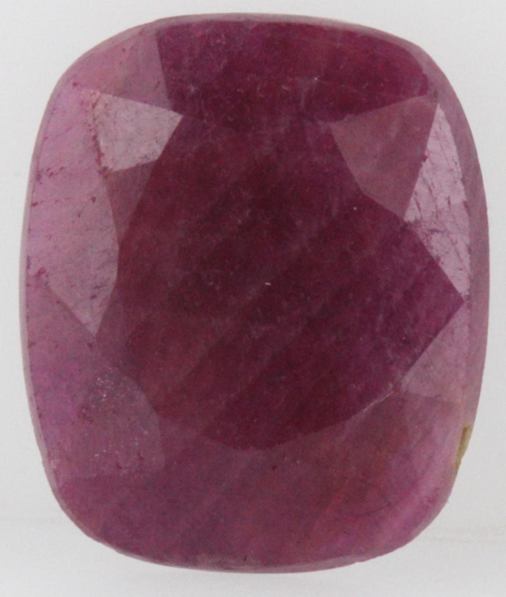
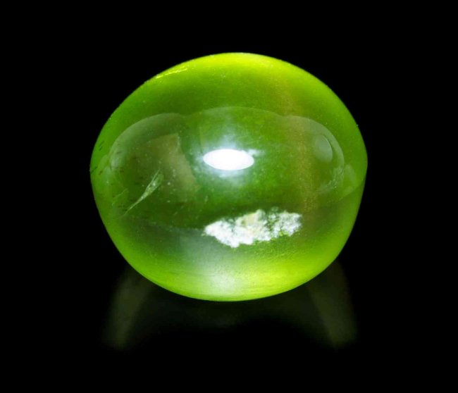

Peridot: The Vibrant Green Gemstone of the Sun
Chemical Formula: (Mg, Fe)₂SiO₄ (Magnesium Iron Silicate)
Color: Green (Yellow-Green to Olive)
Hardness: 6.5 - 7 on the Mohs scale
Crystal System: Orthorhombic
Localities: Myanmar, USA (Arizona), China, Pakistan
Common Uses: Jewelry, Decorative Items, Carvings
Peridot is a captivating gemstone known for its distinct olive-green color and is one of the few gemstones that occur in only one color. Unlike other gems that come in a range of colors, peridot is always green, though the shade can vary from yellow-green to deep olive depending on the amount of iron present in the crystal structure. Peridot is the gem-quality variety of the mineral olivine and has been cherished for thousands of years, particularly by ancient Egyptians who called it the "gem of the sun."
The name "peridot" is believed to have originated from the Arabic word "faridat," meaning "gem." It is one of the oldest known gemstones, and its vibrant green color has long been associated with light and vitality. Peridot is also the birthstone for August, symbolizing strength, prosperity, and growth.
Formation and Types of Peridot
Peridot forms deep within the Earth's mantle and is brought to the surface by volcanic activity. It can also be found in meteorites, making it one of the few gemstones known to occur outside of Earth. Peridot is typically found in basalt rocks and is often associated with volcanic islands.
There are several types of peridot, categorized by their origin and quality:
Burmese Peridot
Peridot from Myanmar (Burma) is known for its exceptional quality with a rich, vibrant green color and high clarity. Burmese peridot is considered some of the finest in the world.
Arizona Peridot
The San Carlos Apache Reservation in Arizona, USA, is one of the most significant sources of peridot. Arizona peridot tends to have a yellow-green hue and is often smaller in size compared to Burmese stones.
Hawaiian Peridot
Peridot found in Hawaii is often referred to as "Hawaiian diamonds." These stones are typically small and lighter in color, often found on the beaches of volcanic islands.
Meteorite Peridot (Pallasite)
Some of the rarest peridot comes from pallasite meteorites, where olivine crystals are embedded in an iron-nickel matrix. This type of peridot is highly prized by collectors and is often referred to as "space peridot."
Structure and Properties of Peridot
Peridot belongs to the orthorhombic crystal system and is composed of magnesium iron silicate (Mg, Fe)₂SiO₄. Its unique green color is due to the presence of iron, which distinguishes it from other green gemstones like emeralds or green sapphires.
- Hardness: Peridot has a hardness of 6.5 to 7 on the Mohs scale, making it relatively durable but still susceptible to scratches and abrasions, particularly during everyday wear.
- Color: The color of peridot ranges from yellow-green to olive green, with the most prized stones exhibiting a pure, vivid green without any brownish or yellowish undertones.
- Luster: Peridot exhibits a vitreous (glassy) luster when polished, giving it a bright reflective surface. This luster enhances the stone's natural sparkle, making it a popular choice for jewelry.
- Clarity: High-quality peridot is typically eye-clean, meaning it has no visible inclusions to the naked eye. However, lower-quality stones may contain small inclusions such as black spots or "lily pad" inclusions, which are characteristic of peridot.
Uses of Peridot
Peridot has been used for various purposes throughout history, most notably in jewelry and as a symbol of wealth and protection:
Jewelry
Peridot is a popular gemstone for all types of jewelry, including rings, necklaces, earrings, and bracelets. Its vibrant green color makes it a favorite for summer and spring-themed designs. Peridot is often set in gold to enhance its warm tones but is also paired with other metals like silver and platinum.
Historical and Religious Artifacts
Peridot has been used in various historical and religious artifacts, particularly in ancient Egypt, where it was believed to protect against evil spirits. It has also been used in medieval churches, where it adorned altars and shrines.
Collectibles and Investments
Due to its rarity and unique color, high-quality peridot is also collected as an investment, with Burmese and pallasite peridot being particularly sought after by collectors.
History of Peridot
The history of peridot is rich and dates back thousands of years:
- Ancient Egypt: Peridot was highly valued in ancient Egypt, where it was mined on the island of Zabargad (St. John's Island) in the Red Sea. The Egyptians called peridot the "gem of the sun" and believed it had protective powers, particularly against the forces of darkness. Cleopatra is said to have worn peridot, mistaking it for emeralds.
- Roman Empire: The Romans were also enamored with peridot and referred to it as the "evening emerald" because its green color did not darken at night but continued to glow under lamplight. Peridot was used in jewelry and amulets, believed to bring good fortune.
- Middle Ages: During the Middle Ages, peridot was used in religious jewelry and church decoration. It was believed to bestow divine inspiration and was often set in gold to enhance its natural beauty.
- Modern Times: Today, peridot remains a popular gemstone, particularly in fine jewelry. Advances in mining and cutting techniques have made high-quality peridot more accessible, allowing it to shine in a variety of modern jewelry designs.
Unusual Varieties of Peridot
While the typical green peridot is the most well-known, there are some unusual varieties and unique specimens:
Pallasite Peridot
Peridot found in meteorites is exceptionally rare and highly prized by collectors. This "space peridot" is often embedded in a metallic matrix, creating a unique and otherworldly appearance.
Color-Shift Peridot
In rare cases, some peridot exhibits a slight color shift when viewed under different lighting conditions, changing from green to a more yellowish or brownish hue.
Cat's Eye Peridot
Some peridot stones exhibit chatoyancy, a phenomenon that creates a cat's eye effect. This is extremely rare and is usually only seen in high-quality stones.
Enhancement of Peridot
To enhance its appearance and durability, peridot may undergo various treatments:
- Heat Treatment: Although rare, some peridot stones may be heat-treated to enhance their color and remove brownish or yellowish undertones. This treatment is stable and generally accepted in the industry.
- Coating: Some peridot stones are coated with a thin layer of material to enhance their color or luster. This treatment is less common and should be disclosed to buyers.
- Repolishing: Over time, peridot may lose its luster due to wear and tear. Professional repolishing can restore the stone's shine and enhance its appearance.
Famous Finds and Peridot
Peridot has been discovered in various parts of the world, with some famous finds being particularly notable:
Zabargad Island, Egypt
The island of Zabargad in the Red Sea is one of the oldest known sources of peridot. The mines on this island have been producing peridot for over 3,500 years and were a significant source of the gemstone in ancient Egypt.
San Carlos Apache Reservation, Arizona
The San Carlos Apache Reservation is one of the most significant sources of peridot in the United States. The peridot from this region is known for its yellow-green hue and is commonly used in commercial jewelry.
Mogok, Myanmar
The Mogok region in Myanmar is famous for producing some of the finest peridot in the world. Burmese peridot is highly prized for its deep green color and exceptional clarity.
Pallasite Meteorites
Peridot found in pallasite meteorites is one of the rarest and most unique forms of the gemstone. These extraterrestrial peridots are highly sought after by collectors and often command high prices.
Sourcing Locations and Mining
Peridot is sourced from several key locations around the world, each known for producing stones with distinct characteristics:
- Myanmar (Burma): Myanmar is known for producing some of the finest peridot, with a rich green color and high clarity. The Mogok region is particularly famous for its high-quality stones.
- United States (Arizona): Arizona is one of the most significant sources of peridot, particularly from the San Carlos Apache Reservation. The peridot from this region is typically yellow-green and is widely used in commercial jewelry.
- China: China is another important source of peridot, with large deposits found in the Xinjiang region. Chinese peridot is known for its bright green color and is often used in affordable jewelry.
- Pakistan: The mountainous regions of Pakistan, particularly the Kohistan area, are known for producing high-quality peridot with a vibrant green color. Pakistani peridot is becoming increasingly popular in the global market.
Where to Find Peridot in the United States
Peridot is found in different locations throughout the United States, including New Mexico and Kentucky. Use our gemstone and crystals map to locate different peridot locations in the United States.
Exploration and Mining
Exploration
Geological surveys and sampling are conducted to locate peridot deposits, typically in volcanic regions or areas with basalt rock formations. Traditional prospecting methods, such as surface exploration and test drilling, are used to identify potential mining sites.
Mining Methods
Peridot is typically mined using open-pit or surface mining techniques, depending on the depth of the deposit. In Arizona, peridot is often found as small crystals embedded in basalt rock and is extracted using basic hand tools.
Processing
After extraction, the peridot is cleaned, sorted, and graded based on its color, clarity, and overall quality. The stone is then cut and polished for use in jewelry or as collector specimens.
Identifying Authentic Peridot
Identifying authentic peridot involves examining several key characteristics:
- Color: Authentic peridot has a distinct green color ranging from yellow-green to olive green. The most valuable peridot exhibits a pure, vivid green with no brown or yellow undertones.
- Clarity: High-quality peridot is typically eye-clean, meaning it has no visible inclusions to the naked eye. Stones with visible inclusions or a cloudy appearance are less valuable.
- Testing Methods: Common tests for authenticity include checking the stone's refractive index (1.65 to 1.69) and examining it under a loupe to identify any characteristic inclusions such as "lily pad" inclusions. Peridot should have a natural, consistent color and luster.
- Certification: High-quality peridot may come with a certificate of authenticity from a reputable gemological laboratory, especially for rare and valuable specimens. This certification provides detailed information about the stone's characteristics and any treatments.
Buy & Sell Authentic Peridot Here
Cutting and Polishing Peridot
Cutting and polishing peridot is a precise process that requires skill to enhance the stone's natural beauty:
- The Cutting Process: Peridot is typically cut into faceted shapes such as round, oval, or cushion to maximize its brilliance and color. The cutter must carefully plan the cut to avoid inclusions and enhance the stone's natural sparkle.
- Polishing: After cutting, peridot is polished to a high gloss using fine abrasives. The polishing process enhances the stone's luster and clarity, giving it a smooth, reflective surface.
- Carving: Due to its relatively soft nature, peridot is also used for carving intricate designs, such as figurines, small sculptures, and ornamental objects. Skilled artisans can create detailed carvings that highlight the stone's unique color and clarity.
Peridot Market and Trade
The market for peridot is influenced by several factors, including quality, origin, and demand:
- Value Determinants: The value of a peridot is determined by its color, clarity, and overall quality. Stones with a vivid green color and high clarity are the most valuable. Burmese peridot is particularly prized for its rich color and exceptional clarity.
- Global Trade: Myanmar, the United States, and China are the leading producers of peridot. The global trade of peridot is driven by demand from jewelers, collectors, and enthusiasts who value the stone for its unique beauty and historical significance.
- Market Trends: Peridot continues to be popular in jewelry and decorative arts. The demand for ethically sourced peridot is increasing, particularly as consumers become more aware of the conditions in which the gemstone is mined. Burmese and pallasite peridot are especially sought after in the global market.
Buy & Sell Authentic Peridot Here
Caring for Peridot
Peridot requires proper care to maintain its beauty and prevent damage:
- Cleaning: Clean peridot with warm soapy water and a soft cloth. Avoid ultrasonic cleaners and harsh chemicals, as these can damage the stone's surface or cause it to crack. Peridot should not be exposed to extreme temperatures or acids.
- Storage: Store peridot separately from harder gemstones to prevent scratches. Keep it in a soft pouch or lined jewelry box to protect it from dust and abrasion.
- Handling: Peridot is relatively soft and can be prone to scratching and chipping. Handle it with care, especially when wearing or cleaning jewelry. Avoid exposing peridot to direct sunlight for prolonged periods, as this can cause the color to fade.
- Repolishing: Over time, peridot may lose its luster due to wear and tear. Professional repolishing can restore the stone's shine and enhance its appearance.
Metaphysical Properties of Peridot
Peridot has been attributed with various metaphysical properties throughout history:
- Protection and Healing: Peridot is often associated with protection and healing. It is believed to ward off negative energies, promote emotional balance, and enhance overall well-being. The stone is also thought to strengthen the immune system and support detoxification.
- Abundance and Prosperity: Peridot is considered a stone of abundance and prosperity. It is believed to attract wealth, success, and positive energy. Many people use peridot to manifest their goals and bring good fortune into their lives.
- Emotional Balance: Peridot is said to balance emotions, alleviate stress, and promote a sense of inner peace. It is often used in crystal healing practices to encourage self-awareness and self-expression.
- Heart Chakra: Peridot is associated with the heart chakra, making it a popular choice for those seeking to enhance love, compassion, and emotional balance. It is believed to open the heart to joy and new beginnings.
See Also
- Related Crystals and Gemstones: Emerald, Tourmaline, Chrysoprase
- Related Topics: Peridot Cutting, Historical Uses of Peridot, Ethical Sourcing of Gemstones